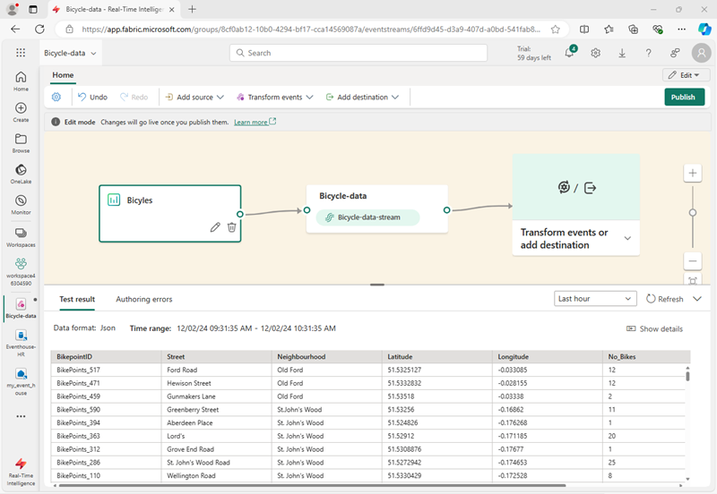
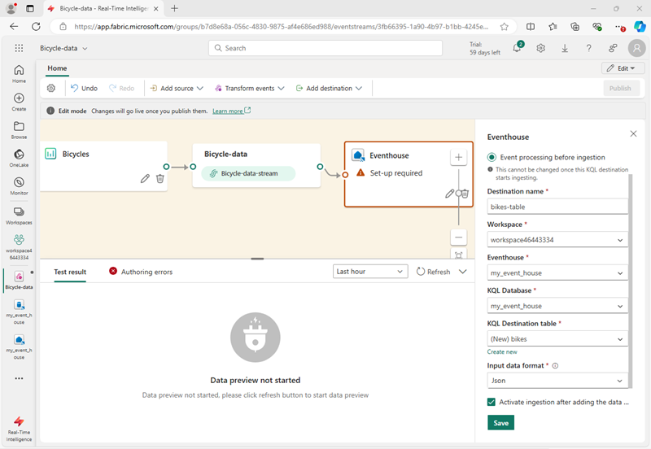
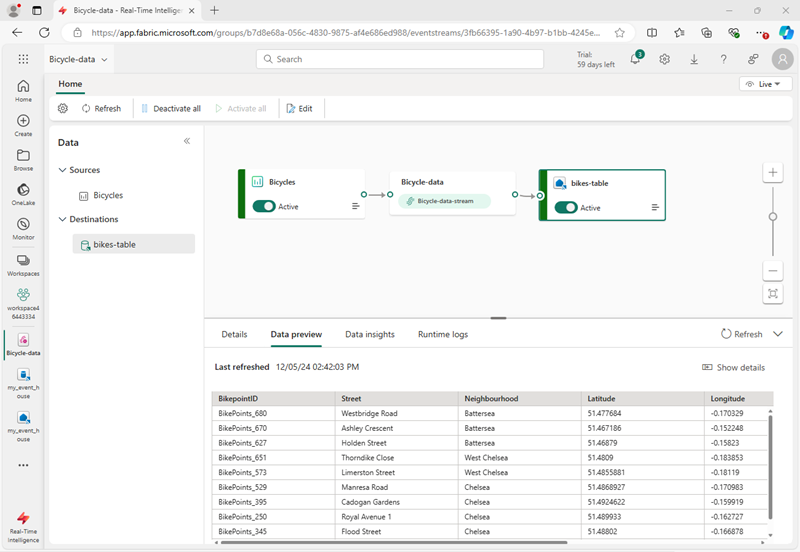
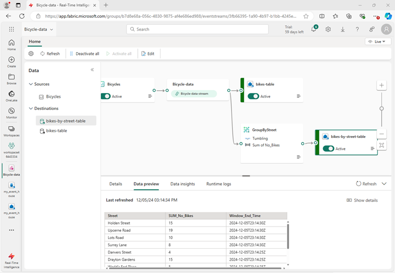

Lab 09 ~ Ingest real-time data with Eventstream in Fabric
For this lab you need to navigate to QA Platform and login using the credentials provided
It is important that you use an incognito/private mode browser tab and not your work or personal Microsoft login
Step 1: Signing in to Microsoft Fabric
In this lab, you will sign in to Microsoft Fabric using the email and password from the QA Platform.
-
Using an incognito/private mode browser tab navigate to the Fabric portal at: https://fabric.microsoft.com
-
Follow the prompts, and sign in with the user credentials from the QA Platform:
- Password
-
After signing in, you will be redirected to the Fabric home page:

Step 2: Create a workspace
Before working with data in Fabric, you need to create a workspace with the Fabric trial enabled.
-
Navigate to the Microsoft Fabric home page in an incognito/private mode browser tab browser, and sign in with the Fabric credentials from the QA Platform.
-
In the menu bar on the left, select Workspaces (the icon looks similar to 🗇).
-
Create a New workspace:
- Give it a name of your choice. For example:
fab_workspace - Leave all other options as the default values
- Click Apply
- Give it a name of your choice. For example:
-
When your new workspace opens, it should be empty.

Step 3: Create an eventhouse
Now that you have a workspace, you can start creating the Fabric items you'll need for your real-time intelligence solution. we'll start by creating an eventhouse.
-
In the workspace you just created, select + New item. In the New item pane, select Eventhouse, giving it a unique name of your choice.
-
Close any tips or prompts that are displayed until you see your new empty eventhouse.

-
In the pane on the left, note that your eventhouse contains a KQL database with the same name as the eventhouse.
-
Select the KQL database to view it.
Note: Currently there are no tables in the database.
In the rest of this exercise you'll use an eventstream to load data from a real-time source into a table.
Step 4: Create an Eventstream
-
In the main page of your KQL database, select Get data.
-
For the data source, select Eventstream > New eventstream. Name the Eventstream
Bicycle-data.The creation of your new event stream in the workspace will be completed in just a few moments. Once established, you will be automatically redirected to the primary editor, ready to begin integrating sources into your event stream.
Step 5: Add a source
-
In the Eventstream canvas, select Use sample data.
-
Name the source
Bicycles, and select the Bicycles sample data.Your stream will be mapped and you will be automatically displayed on the eventstream canvas.

Step 6: Add a destination
-
Select the Transform events or add destination tile and search for Eventhouse.
-
In the Eventhouse pane, configure the following setup options.
- Data ingestion mode:: Event processing before ingestion
- Destination name:
bikes-table - Workspace: Select the workspace you created at the beginning of this exercise
- Eventhouse: Select your eventhouse
- KQL database: Select your KQL database
- Destination table: Create a new table named
bikes -
Input data format: JSON

-
In the Eventhouse pane, select Save.
-
On the toolbar, select Publish.
-
Wait a minute or so for the data destination to become active. Then select the bikes-table node in the design canvas and view the Data preview pane underneath to see the latest data that has been ingested:

-
Wait a few minutes and then use the Refresh button to refresh the Data preview pane. The stream is running perpetually, so new data may have been added to the table.
-
Beneath the eventstream design canvas, view the Data insights tab to see details of the data events that have been captured.
Step 7: Query captured data
The eventstream you have created takes data from the sample source of bicycle data and loads it into the database in your eventhouse. You can analyze the captured data by querying the table in the database.
-
In the menu bar on the left, select your KQL database.
-
On the database tab, in the toolbar for your KQL database, use the Refresh button to refresh the view until you see the bikes table under the database. Then select the bikes table.

-
In the ... menu for the bikes table, select Query table > Records ingested in the last 24 hours.
-
In the query pane, note that the following query has been generated and run, with the results shown beneath:
// See the most recent data - records ingested in the last 24 hours. bikes | where ingestion_time() between (now(-1d) .. now()) -
Select the query code and run it to see 24 hours of data from the table.

Step 8: Transform event data
The data you've captured is unaltered from the source. In many scenarios, you may want to transform the data in the event stream before loading it into a destination.
-
In the menu bar on the left, select the Bicycle-data eventstream.
-
On the toolbar, select Edit to edit the eventstream.
-
In the Transform events menu, select Group by to add a new Group by node to the eventstream.
-
Drag a connection from the output of the Bicycle-data node to the input of the new Group by node Then use the pencil icon in the Group by node to edit it.

-
Configure out the properties of the Group by settings section:
- Operation name: GroupByStreet
- Aggregate type: Select Sum
- Field: select No_Bikes. Then select Add to create the function SUM of No_Bikes
- Group aggregations by (optional): Street
- Time window: Tumbling
- Duration: 5 seconds
- Offset: 0 seconds
This configuration will cause the eventstream to calculate the total number of bicycles in each street every 5 seconds.
-
Save the configuration and return to the eventstream canvas, where an error is indicated (because you need to store the output from the transformation somewhere!).
-
Use the + icon to the right of the GroupByStreet node to add a new Eventhouse node.
-
Configure the new eventhouse node with the following options:
- Data ingestion mode:: Event processing before ingestion
- Destination name:
bikes-by-street-table - Workspace: Select the workspace you created at the beginning of this exercise
- Eventhouse: Select your eventhouse
- KQL database: Select your KQL database
- Destination table: Create a new table named
bikes-by-street -
Input data format: JSON

-
In the Eventhouse pane, select Save.
-
On the toolbar, select Publish.
-
Wait a minute or so for the changes to become active.
-
In the design canvas, select the bikes-by-street-table node, and view the data preview pane beneath the canvas.

Note that the trasformed data includes the grouping field you specified (Street), the aggregation you specified (SUM_no_Bikes), and a timestamp field indicating the end of the 5 second tumbling window in which the event occurred (Window_End_Time).
Step 9: Query the transformed data
Now you can query the bicycle data that has been transformed and loaded into a table by your eventstream
-
In the menu bar on the left, select your KQL database.
-
On the database tab, in the toolbar for your KQL database, use the Refresh button to refresh the view until you see the bikes-by-street table under the database.
-
In the ... menu for the bikes-by-street table, select Query data > Show any 100 records.
-
In the query pane, note that the following query is generated and run:
['bikes-by-street'] | take 100 -
Modify the KQL query to retrieve the total number of bikes per street within each 5 second window:
['bikes-by-street'] | summarize TotalBikes = sum(tolong(SUM_No_Bikes)) by Window_End_Time, Street | sort by Window_End_Time desc , Street asc -
Select the modified query and run it.
The results show the number of bikes observed in each street within each 5 second time period.

Clean up resources
In this exercise, you have created an eventhouse and populated tables in its database by using an eventstream.
When you've finished exploring your KQL database, you can delete the workspace you created for this exercise.
-
Navigate to Microsoft Fabric in your browser.
-
In the bar on the left, select the icon for your workspace to view all of the items it contains.
-
Select Workspace settings and in the General section, scroll down and select Remove this workspace.
-
Select Delete to delete the workspace.